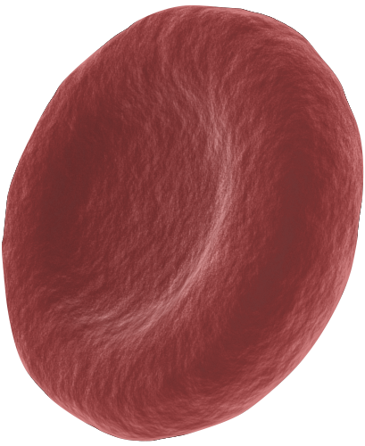

*what is PM2.5?
PM, short for particulate matter, consists of microscopic particles lgall enough to be suspended in the air for a long period of time. PM2.5 refers to very fine particles whose diameters are less than 2.5 micrometer (µm), which is 0.0025 millimeter or 0.00001 inch. they are often the direct result of man-made activities, such as coal and diesel burning, vehicle emission, construction site, and agriculture waste combustion.
tiny as they are, PM2.5 particles are invisible to our naked eyes. the background of this page is an image of a single human hair magnified 1,000 - 10,000 times depending on your screen size. scroll down to see how PM2.5 compares.
human hair
50 µm (0.05 mm)

coarse particle PM10
10 µm

red blood cell
red blood cell
7 µm

fine particle PM2.5
<2.5 µm
coronavirus
0.1 µm
as we can see, PM2.5 particles are even smaller than a red blood cell. because of this, they are capable of traversing our airways and penetrate into our lungs, from which they find their ways into our blood vessels and into other organs, such as the brain, liver, and kidney. as they are made up of chemicals and heavy metals, they are capable of causing inflammation, oxidative stress, blockage, and ultimately cancer.